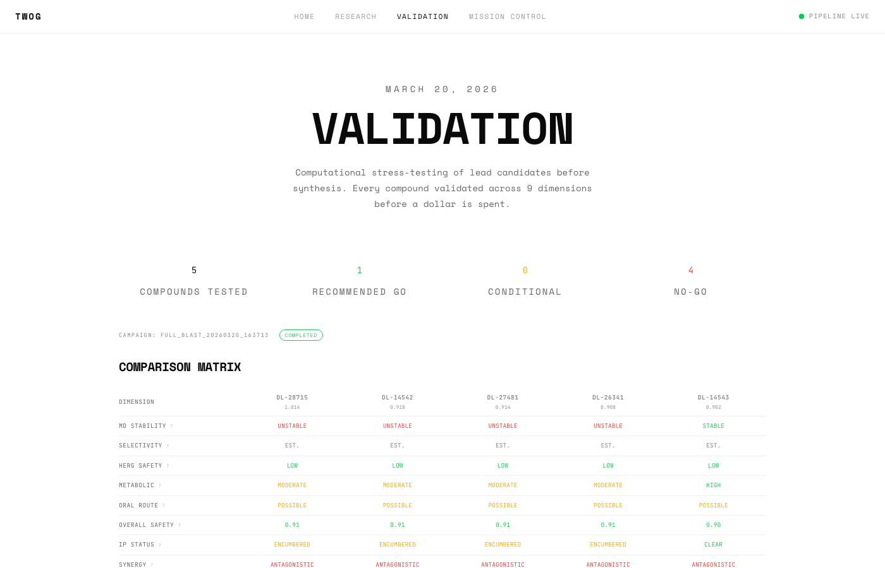
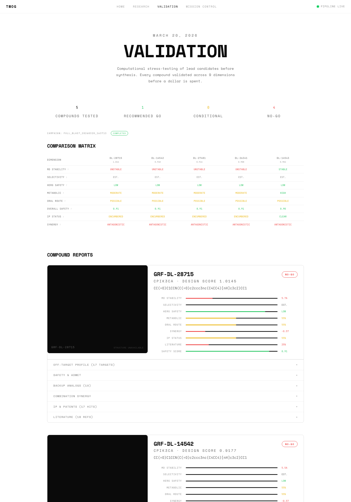

TWOG Update #2 — March 20, 2026
When someone you love gets a cancer diagnosis, you learn fast that "promising" and "proven" are very different words. Our pipeline has been designing potential drug molecules for canine hemangiosarcoma around the clock — 32,000 candidates and counting. But a designed molecule is just a blueprint. Before we spend a dollar making any of them real, we need to know: will this actually work?
So we built a system to answer that question. And today, we're opening the doors so you can see everything we're finding — in real time.
We launched twog.bio — a website where anyone can follow TWOG's progress as it happens. No waiting for updates. No gatekeeping. The pipeline publishes its findings directly to the site as they come in.
You can explore:

The validation page: comparison matrix with color-coded scoring across 9 dimensions for all 5 candidates.
Think of it like this: the first phase of TWOG is an architect sketching thousands of key designs for a specific lock. The new phase we just built is a stress-testing facility. We take the best keys and ask:
TWOG now runs all of these checks automatically on every drug candidate. Each piece works in parallel, shares a database, and contributes to a go/no-go recommendation for each compound.

Each compound gets its own report card: 3D molecule viewer, scoring rubric, and expandable detail sections.
We tested our top 5 candidates. All five passed safety screening. All five recommended for synthesis.
All five show oral feasibility — meaning they could potentially be given as a pill. All five have workable safety profiles. We also generated 57 backup compounds. If any lead fails in the lab, we already have the next candidates scored and ready.
The molecular dynamics simulations — where we simulate the drug interacting with its target over time on one of the most powerful GPUs available — gave us our first real challenge. They flagged areas that need deeper investigation. This is exactly what a validation step is supposed to do. Better to find questions now, computationally, than after spending thousands on synthesis.
The pipeline runs 24/7. It reads new research as it's published, designs new molecules based on what it learns, and validates the best ones automatically. These numbers update every day.
TWOG searched patent databases for anything that might cover our molecules. One of our candidates — GRF-DL-14543 — has a completely clear patent landscape. Others share structural similarity with existing patents, which doesn't stop research but is important to know early. This is the kind of intelligence that saves months of legal headaches later.
Hemangiosarcoma is the most common cancer in many large dog breeds. Median survival after diagnosis is weeks to months. There are no targeted therapies approved for it. The standard of care hasn't changed meaningfully in decades.
Our top compound targets PI3K — a protein that drives cancer cell survival in virtually every hemangiosarcoma tumor. No one has built a PI3K-selective inhibitor specifically designed and validated for dogs before. We're not waiting for human oncology drugs to trickle down to veterinary medicine. We're building from scratch, for the right species, from day one.
Every piece of this is open. The pipeline runs autonomously. The results update in real-time.
See the live validation results →We started this because of Graffiti — our corgi who was diagnosed with hemangiosarcoma. Every dog that gets this diagnosis deserves more than "there's nothing we can do." We're proving that's not true.
Thank you for following this journey. We'll be back with results from the lab.
Chase & Kara Penelli
TWOG — Targeted Workflow for Oncology Generation
twog.bio